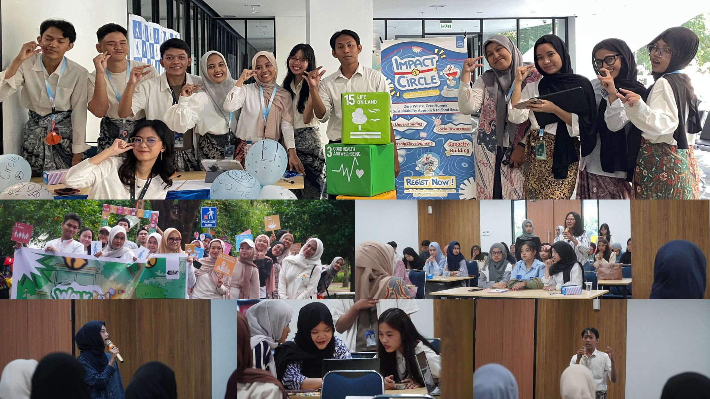

March - July 2025
As the Organizing Comittee Vice Presdent Marketing of Impact Circle 2025, I contributed to the marketing of Impact Circle 2025 by developing and executing marketing strategies that highlighted the event’s value and impact. To attract potential participants, I created engaging content across various digital platforms while ensuring all campaigns aligned with organizational goals through close collaboration with cross-functional teams. I also analyzed campaign performance, leveraging data insights to refine and optimize strategies for better outreach. Beyond digital efforts, I supported event planning and community engagement activities, strengthening overall visibility and participant engagement.
Key Achievements:
- Increased online engagement by 30% through targeted content creation and campaign execution.
- Successfully reached and attracted 200+ potential participants across multiple digital platforms.
- Collaborated with 5 cross-functional teams, ensuring cohesive branding and consistent messaging.
- Contributed to the smooth execution of 3 community engagement events, boosting outreach and visibility.